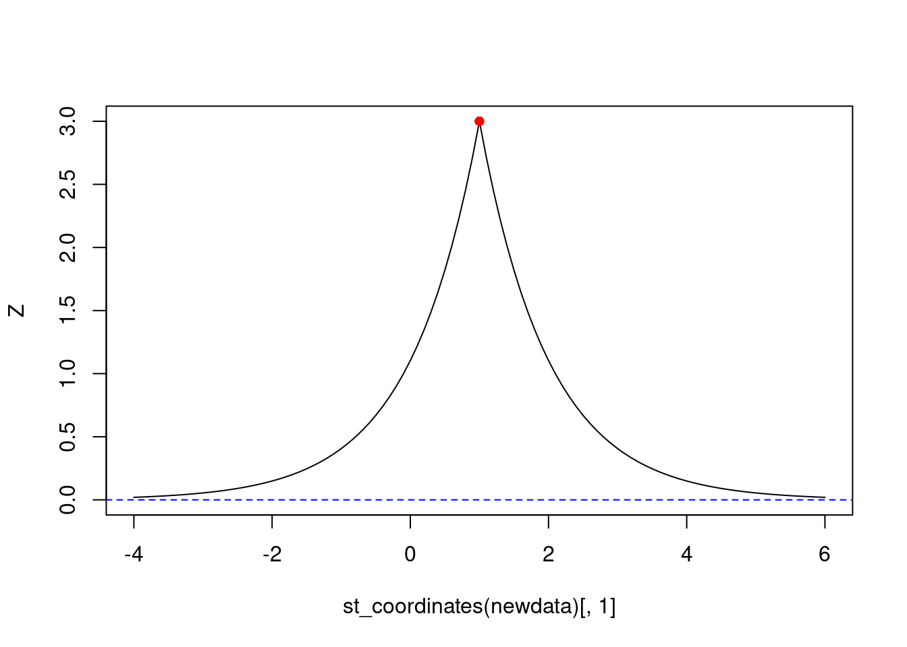
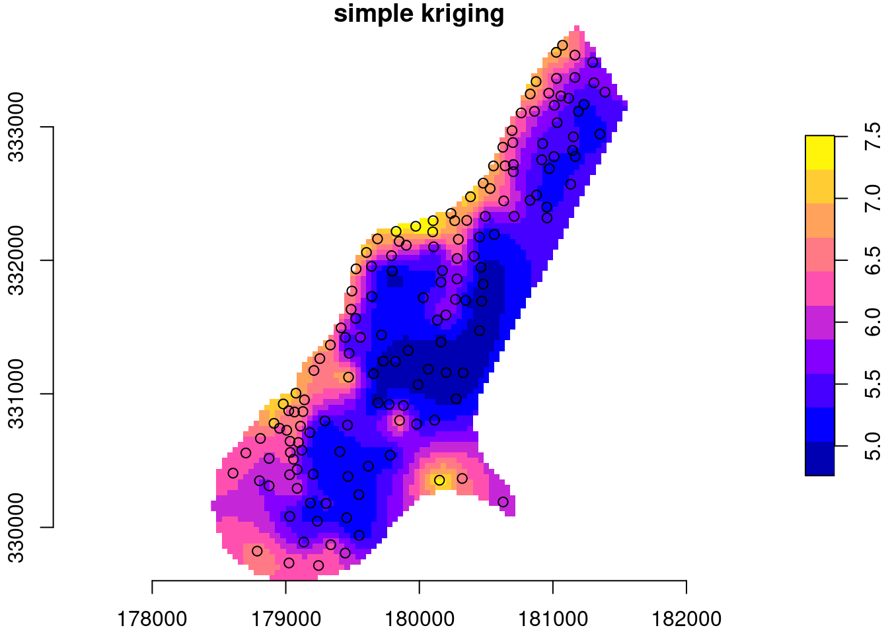

library(sf) # st_distance()
cov = function(h) exp(-h)
sk = function(data, newdata, mu, cov) {
V = cov(st_distance(data))
v = cov(st_distance(data, newdata))
mu + t(v) %*% solve(V, data[[1]] - mu)
}
# prediction location at (0,1):
newdata = st_as_sf(data.frame(x = 0, y = 1), coords = c("x", "y"))
# observation location at (1,1), with attribute value (y) 3:
data = st_as_sf(data.frame(x = 1, y = 1, z = 3), coords = c("x", "y"))
sk(data, newdata, 0, cov) # mu = 0
# [,1]
# [1,] 1.1
newdata = st_as_sf(data.frame(x = .1 * 0:20, y = 1), coords = c("x", "y"))
sk(data, newdata, 0, cov) # mu = 0
# [,1]
# [1,] 1.10
# [2,] 1.22
# [3,] 1.35
# [4,] 1.49
# [5,] 1.65
# [6,] 1.82
# [7,] 2.01
# [8,] 2.22
# [9,] 2.46
# [10,] 2.71
# [11,] 3.00
# [12,] 2.71
# [13,] 2.46
# [14,] 2.22
# [15,] 2.01
# [16,] 1.82
# [17,] 1.65
# [18,] 1.49
# [19,] 1.35
# [20,] 1.22
# [21,] 1.106 Spatial prediction
\[ \newcommand{\E}{{\rm E}} % E expectation operator \newcommand{\Var}{{\rm Var}} % Var variance operator \newcommand{\Cov}{{\rm Cov}} % Cov covariance operator \newcommand{\Cor}{{\rm Corr}} \]
What is spatial correlation?
Idea from time series: look at lagged correlations, and the \(h\)-scatterplot.
What is it? Plots of (or correlation between) \(Z(s)\) and \(Z(s+h)\), where \(s+h\) is \(s\), shifted by \(h\) (time distance, spatial distance).
Random variables: expectation, variance, covariance
Random variable: \(Z\) follows a probability distribution, specified by a density function \(f(z)= \Pr(Z=z)\) or a distribution function \(F(z)=\Pr(Z \le z)\)
Expectation: \(\E(Z) = \int_{-\infty}^{\infty} f(s)ds\) – center of mass, mean.
Variance: \(\Var(Z)=\E(Z-\E(Z))^2\) – mean squared distance from mean; measure of spread; square root: standard deviation of \(Z\).
Covariance: \(\Cov(X,Y)=\E((X-\E(X))(Y-\E(Y)))\) – mean product; can be negative; \(\Cov(X,X)=\Var(X)\).
Correlation: \(r_{XY}=\frac{\Cov(X,Y)}{\sqrt{\Var(X)\Var(Y)}}\) – normalized \([-1,1]\) covariance. -1 or +1: perfect correlation.
Normal distribution
- univariate: If \(Z\) follows a normal distribution, its probability distribution is completely characterized by its mean \(E(Z)=\mu\) and variance \(\Var(Z)=\sigma^2\)
- multivariate: If the vector \(Z=(Z_1,Z_2,...,Z_p)\) follows a multivariate normal distribution, its marginal distributions are univariate normal, and its joint probability distribution is completely characterized by the mean vector \(E(Z)=\mu=(\mu_1,...\mu_p)\) and covariance matrix \(V\), of which element \((i,j)\) equals \(\Cov(Z_i,Z_j)\)
- covariance matrices have variances on the diagonal
How can correlation help prediction?
Problem:

Questions
Given observation \(z(s_1)\), how to predict \(z(s_0)\)?
- What is the best predicted value at \(s_0\), \(\hat{z}(s_0)\)?
- How can we compute a measure of error for \(\hat{z}(s_0)-z(s_0)\)?
- Can we compute e.g.~95% prediction intervals for the unknown \(z(s_0)\)?
Obviously, given only \(z(s_1)\), the best predictor for \(z(s_0)\) is \(\hat{z}(s_0)=z(s_1)\).
But what is the error variance, i.e. \(\mbox{Var}(\hat{z}(s_0)-z(s_0))\)?
Estimation error
Let both \(z(s_1)\) and \(z(s_0)\) come from a field that has variance 1, i.e. \(\mbox{Var}(z(s_0)) = \mbox{Var}(z(s_1))=1\), and that has a constant mean: \(\mbox{E}(z(s_0)) = \mbox{E}(z(s_1))=m\)
Then, \[\mbox{Var}(\hat{z}(s_0)-z(s_0)) = \mbox{Var}(z(s_1)-z(s_0))\]
As both have the same mean, this can be written as \[\mbox{E}(\hat{z}(s_0)-z(s_0))^2 = \mbox{Var}(z(s_1)) + \mbox{Var}(z(s_0)) - 2\mbox{Cov}(z(s_1),z(s_0))\]
As both have variance 1, this equals \(2(1-r)\) with \(r\) the correlation between \(z(s_0)\) and \(z(s_1)\). Examples follow.
Suppose we know the mean
If we know the mean \(\mu\), it may be a good idea to use a compromise between the observation and the mean, e.g. \[\hat{z}(s_0) = (1-r) \mu + r z(s_1)\]
Next problems…


What is Geostatistical Interpolation?
Geostatistical interpolation (kriging) uses linear predictors \[\hat{z}(s_0) = \sum_{i=1}^n \lambda_i z(s_i)\] with weights chosen such that
- the interpolated values is unbiased: \(\mbox{E}(\hat{z}(s_0)-z(s_0))=0\) and
- has mininum variance: \(\mbox{Var}(\hat{z}(s_0)-z(s_0))\) is at minimum.
All that is needed is variances and correlations.
The quadratic form
We will not consider single random variables, but rather large collections of them. In fact, we will consider each observation \(z(s_i)\) as a realisation (outcome) of a random variable \(Z(s_i)\), and consider the \(Z\) variable at all other locations also as separate random variables, say \(Z(s_0)\) for any \(s_0\) in the domain of interest.
Let \(Z = [Z(s_1)\ Z(s_2)\ ...\ Z(s_n)]'\) then \(\Var(Z)=V\) is the covariance matrix of vector \(Z\), with \(i,j\)-th element \(\Cov(Z(s_i),Z(s_j))\), implying it has variances on the diagonal.
Then, it is easy to show that for non-random weights \(\lambda = [\lambda_1 ... \lambda_n]'\) the quadratic form \(\lambda'Z = \sum_{i=1}^n \lambda_i Z(s_i)\) has variance \[ \Var(\lambda'Z) = \lambda' \Var(Z) \lambda = \sum_{i=1}^n \sum_{j=1}^n \lambda_i \lambda_j \Cov(Z(s_i),Z(s_j)) = \lambda'V\lambda\]
Why do we need this?
When we predict (interpolate), we’re forming linear combinations, \(\sum_{i=1}^n \lambda_i Z(s_i)\), and want to know the variance of \(\sum_{i=1}^n \lambda_i Z(s_i) - Z(s_0)\), the interpolation error variance. Only then can we find weights such that it is minimum.
What is the scalar \(\Var(\sum_{i=1}^n \lambda_i Z(s_i)-Z(s_0))\)? Write as
\[\Var(\lambda'Z - Z(s_0)) = \Var(\lambda'Z) + \Var(Z(s_0)) - 2\Cov(\lambda'Z,Z(s_0))\] \[=\lambda'V\lambda + \sigma_0^2 + \sum_{i=1}^n \lambda_i \Cov(Z(s_i),Z(s_0)) \] with \(\sigma_0^2 = \Var(Z(s_0))\)
So, we need variances of all \(Z(s_i)\), including for all \(s_0\), and all covariances between pairs \(Z(s_i)\) and \(Z(s_j)\), including all \(s_0\).
Suppose we know all that
Kriging: find weights \(\lambda\) such that \(\Var(Z(s_0)-\hat{Z}(s_0))= \Var(Z(s_0)-\sum_{i=1}^n\lambda_i Z(s_i))\) is minimized, and we have the best (minimum variance) linear predictor.
Best linear prediction weights: Let \(V=\Var(Z)\ \ (n\times n)\) and \(v=\Cov(Z(s_0),Z)\ \ (n\times 1)\), and scalar \(\Var(Z(s_0)) = \sigma^2_0\).
Expected squared prediction error \(\E(Z(s_0)-\hat{Z}(s_0))^2 = \sigma^2(s_0)\)
Replace \(Z\) with \(Z-\mu\) (or assume \(\mu=0\))
\[\sigma^2(s_0) = \E(Z(s_0)-\lambda ' Z)^2 = \E(Z(s_0))^2 - 2 \lambda '\E(Z(s_0) Z)+\lambda'\E(Z Z')\lambda \]
\[ = \Var(Z(s_0)) - 2 \lambda'\Cov(Z(s_0),Z) + \lambda'\Var(Z)\lambda = \sigma^2_0 - 2 \lambda'v + \lambda'V\lambda \]
Choose \(\lambda\) such that \(\frac{\delta \sigma^2(s_0)}{\delta\lambda} = -2 v' + 2\lambda'V = 0\)
\(\lambda' = v' V^{-1}\)
BLP/Simple kriging:
- \(\hat{Z}(s_0) = \mu + v'V^{-1} (Z-\mu)\)
- \(\sigma^2(s_0) = \sigma^2_0 - v'V^{-1}v\)
Plotting them: ::: {.cell}
newdata = st_as_sf(data.frame(x = seq(-4, 6, by = .1), y = 1), coords = c("x", "y"))
Z = sk(data, newdata, 0, cov) # mu = 0
plot(st_coordinates(newdata)[,1], Z, type = 'l', ylim = c(0, 3))
points(1, 3, col = 'red', pch = 16)
abline(0, 0, col = 'blue', lty = 2)
:::
Example with zinc data:
data(meuse, package = "sp")
meuse = st_as_sf(meuse, coords = c("x", "y"))
data(meuse.grid, package = "sp")
meuse[[1]] = log(meuse$zinc)
library(stars)
meuse.grid = st_as_stars(meuse.grid)
meuse.grid$sk = sk(meuse,
st_as_sf(meuse.grid, as_points = TRUE, na.rm = FALSE),
mu = mean(log(meuse$zinc)),
cov = function(h) exp(-h/300))
# mask:
meuse.grid$sk[ is.na(meuse.grid$dist) ] = NA
plot(meuse.grid["sk"], main = "simple kriging", axes = TRUE,
col = sf.colors(), breaks = "equal", reset = FALSE)
plot(st_geometry(meuse), add = TRUE)